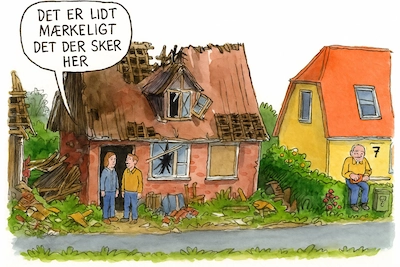

Nærkontakt
I nærkontakt med farlig ukrudt, her er 3 vigtige ting du kan gøre.
Du kan også indberette en ulykke hvis du har set noget du mener
skal undersøges nærmere.
Guidelines.
I nærkontakt med farlig ukrudt, her er 3 vigtige ting du kan gøre.
Du kan også indberette en ulykke hvis du har set noget du mener
skal undersøges nærmere.
Hvis du har set noget mærkeligt, kan du sende en indberetning, og så kigger vi på det!
Se mereEr det naturen, der slår igen eller mennesket, der endelig får sin straf?
To personer slap med livet i behold, da deres bil pludselig blev fanget af hurtigtvoksende rødder på en landevej i Texas.